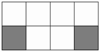
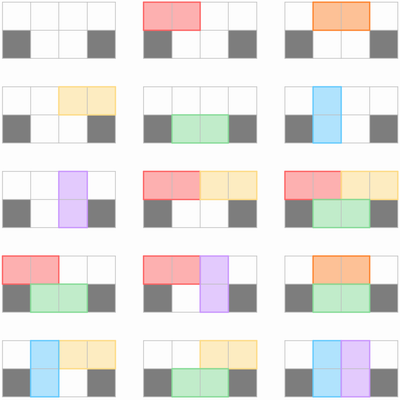

BZPRO
#5205. [CodePlus 2018 3 月赛]白金元首与莫斯科
内存限制：512 MiB
时间限制：20 Sec
提交
提交记录
讨论
题目描述
寒冷刺骨的天气、疲惫不堪的军队……包围首都的作战计划陷入了困境。空军或许是拯救战况的最后希望了，元首
Adolf想道。在一个n×m的网格区域中存在一个陆军单位需要补给，区域中的每个格子为空地或障碍物中的一种。
航空舰队需要派遣若干运输机前往此区域，每一架运输机可以向两个相邻（有一条公共边）的空地投放物资。为防
止不必要的损坏，一个标记为空地的格子至多只能得到一次投放。由于天气原因，陆军单位所在的确切位置并不能
确定。因此元首想知道，对于每个空地格子，当陆军单位在其中（视作障碍物）时，用若干（可以为0）架运输机
向其余空地投放任意数量的物资的不同方案数。两个投放方案不同，当且仅当存在一个格子在一个方案中被投放而
另一方案中未被投放，或存在两个被投放的格子，在一个方案中被同一架运输机投放而在另一方案中非然。若仍有
疑问，请参考「样例1解释」。
你需要编写程序帮助元首计算这些值。
输入格式
第一行包含一个正整数T——数据的组数。
接下来包含T组数据，格式如下，数据间没有空行。
第1行：两个空格分隔的正整数n,m—网格区域的行数和列数。
接下来n行：其中第i行包含m个空格分隔的整数Ai1,Ai2,…,Aim—其中Aij=0表示第iii行第j列的格子为空地；Aij=1表示该格为障碍物。
1≤n,m≤17,Aij∈{0,1}
输出格式
对于每组数据输出n行
第i行包含m个空格分隔的整数Bi1,Bi2,…,Bim—若第i行第j列的格子为空地，Bij为该格变为障碍物后投放的方案数；否则Bij=0
样例
样例输入
2 4
0 0 0 0
0 0 0 1
样例输出
14 13 10 22
15 11 17 0
数据范围与提示
以第 2行第 1 列的空地格为例，其变为障碍物后的网格如下图，其中白色格子代表空地，黑色格子代表障碍物。

15种方案如下图所示，不同颜色代表不同运输机的投放位置

来自 CodePlus 2018 3 月赛，清华大学计算机科学与技术系学生算法与竞赛协会 荣誉出品。
Credit：idea/吕时清 命题/吕时清 验题/吕欣，王聿中
Git Repo：https://git.thusaac.org/publish/CodePlus3
感谢腾讯公司对此次比赛的支持。